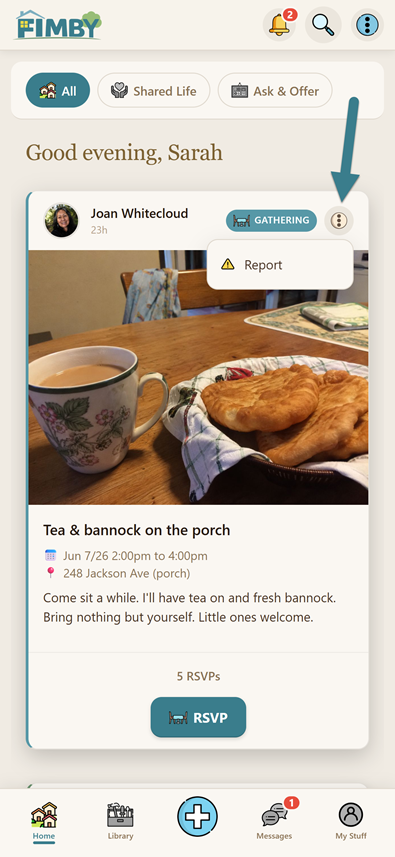
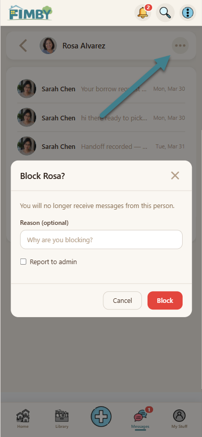
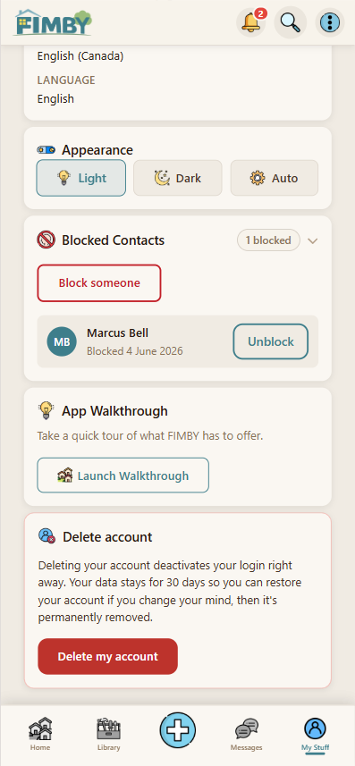

iOS · v1.0.0 · Prepared for App Review
FIMBY (Family In My Backyard) is a charity-operated neighbourhood mutual-aid app for adults 19+, run by Strathcona Vineyard Church, a registered Canadian charity in BC. Neighbours ask for and offer help, lend and borrow items, coordinate bulk buys, host gatherings, and message one another — all scoped to a single verified neighbourhood.
It is invite-only and neighbourhood-scoped: a normal account only ever sees its own neighbourhood. So you can review the full experience without involving real neighbours, we have pre-seeded a dedicated "Reviewer's Neighbourhood" with posts, library items, a conversation, and a pre-vouched account.
Native iOS features: Apple Push Notifications for neighbour messages and lending reminders, secure on-device sign-in with credentials stored in the iOS Keychain, Universal Links for the sign-in callback, and per-user quiet hours that silence alerts on-device. The app is a full mutual-aid client — asks, offers, a lending library with due-date tracking, bulk-buy coordination, events, and direct & group messaging.
Everything below is reachable from the bottom navigation after sign-in.
FIMBY meets all four UGC requirements. Tools are reachable on every surface where content appears:



Reporter identity is confidential by default. A dispute or report is never assigned to a party involved in it. The full ladder of responses (content removal → warning → restriction → removal) is published in our Community Standards.